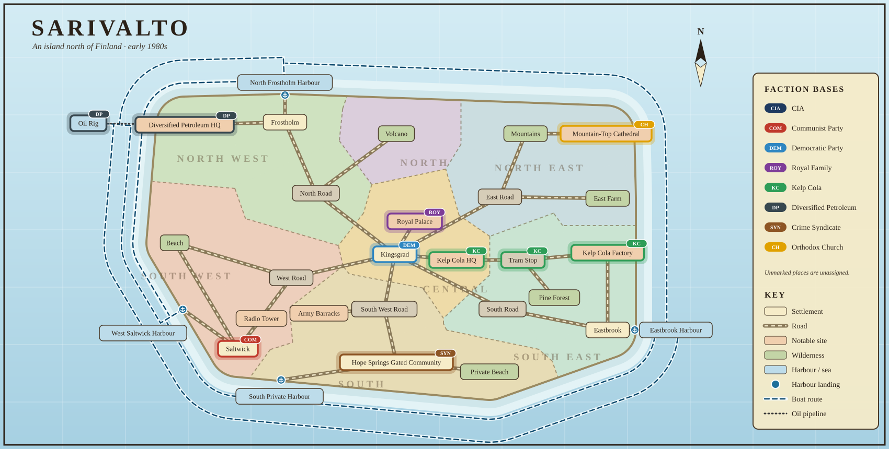

Sarivalto Wiki
Sarivalto is set in the early 1980s, during the Cold War, on an island north of Finland. The island has been a monarchy for a few hundred years, and its latest king has just died. You play a CIA agent sent to make sure the island does not join the Soviet Union. There is no combat: each day you talk to different characters, and your choices, whose consequences stay hidden, decide which faction ends up controlling the island.

- 29 places and 40 building interiors: all locations
- 8 factions
- 34 people